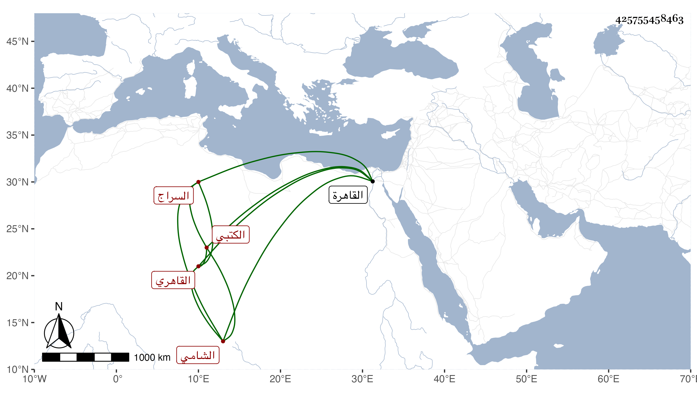

0902Sakhawi.DawLamic.ITO20230111-ara1.EIS1600.425755458463
Biography ID: 425755458463
363
عمر بن محمد بن إبراهيم السراج الشامي القاهري الكتبي والد محمد ويعرف بالشامي . ولد سنة سبع أو ثمان وأربعين وسبعمائة ، وذكر أنه سمع من العفيف النشاوري الصحيحين وغيرهما واستكتبه الطلبة في الاستدعاءات وكان خيرا يتكسب بصناعة التجليد ويخدم شيخنا في ذلك مع أنه لم يكن بالماهر في صناعته ووقع له أنه رأى أجزاء علي بن حجر في السوق فاشتراها وأحضر بها لشيخنا وقال له : قد وقع لي تصنيف لأبيكم فاشتريته فأخذه ولم يخجله فأبو هذا حجر بضم المهملة وسكون الجيم وشهرة شيخنا ابن حجر بفتحتين . مات بالقاهرة سنة ثلاث أو أربع وأربعين رحمه الله .
